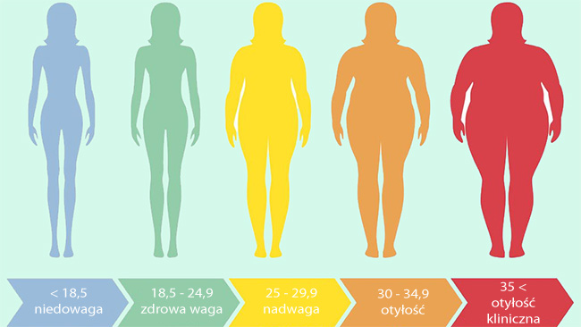

Porady na złe BMI

Co robić w przypadku, gdy...
Twoje BMI jest za małe.
Jedz regularnie
Podobnie jak w przypadku redukcji masy ciała, również i w celu jej zwiększenia należy jeść o stałych porach, w miarę równych odstępach. Podczas gdy osobie odchudzającej poleca się od 4 do 5 posiłków dziennie, Ty sięgaj po 6, a nawet 8 na dobę. Pamiętaj, że aby przytyć ok. 1 kg, powinieneś dostarczyć ok. 7000 kcal więcej niż wynosi Twoje zapotrzebowanie.
Zwiększ gęstość odżywczą posiłków
Do dań dodawaj produkty o wysokiej kaloryczności, takie jak: oliwa, miód, orzechy, pestki, nasiona, banany, awokado, płatki czy nasiona roślin strączkowych. Przykładowo, na śniadanie przygotuj jaglankę na tłustym mleku, dodaj banana, zmielone orzechy i miód. Na drugie śniadanie zjedz grahamkę skropioną oliwą, z plastrami awokado i dowolnym serem. Na obiad – zupę krem zagęszczoną rozgotowaną soczewicą i zapiekankę makaronową z tłustą rybą morską. W ramach podwieczorku wypij szejka owocowego z dodatkiem zmiksowanych płatków, z masłem orzechowym. Na kolację wybierz sałatkę z kaszy, twarogu, z ulubionymi warzywami, pestkami i domowym vinegret na oleju lnianym. Taki jadłospis jest nie tylko smaczny, w miarę niewielki objętościowo, ale i przede wszystkim zdrowy – pełny witamin, składników mineralnych oraz wielonienasyconych kwasów tłuszczowych omega-3.
Twoje BMI jest za duże.
To prawda - chudnięcie zaczyna się od kuchni. Posiłki, które jemy każdego dnia, mają duży wpływ na wygląd brzucha. Jednak nie chodzi wyłącznie o to, by zacząć żyć o sałatce i wodzie. Sprzymierzeńcem smukłej figury są składniki spożywcze, które udrażniają przewód pokarmowy. Dzięki nim metabolizm przyśpiesza, a tłuszcz przestaje odkładać się w postaci boczków. Spożyte kalorie mają dawać energię, zamiast ją zabierać, dlatego warto dokonywać mądrych wyborów. Na czarną listę wpisz fast food i słodycze - pokarmy ciężko trawione przez organizm. Dieta na płaski brzuch powinna obfitować w warzywa, owoce, zieleninę, białko oraz nieprzetworzone tłuszcze. Naturalny styl odżywiania połączony z ćwiczeniami przyniesie efekty w szybkim czasie. Nie odkładaj zdrowych zmian na kolejny dzień. Sporządź listę zakupów i zacznij już dziś. Pamiętaj - nie można odchudzić tylko jednej części ciała. Na zdrowej diecie idącej w parze ze sportem zyska cała sylwetka, nie tylko brzuch. Dasz radę!